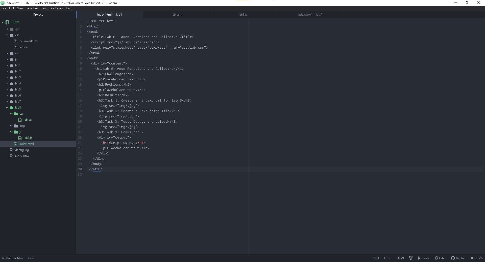
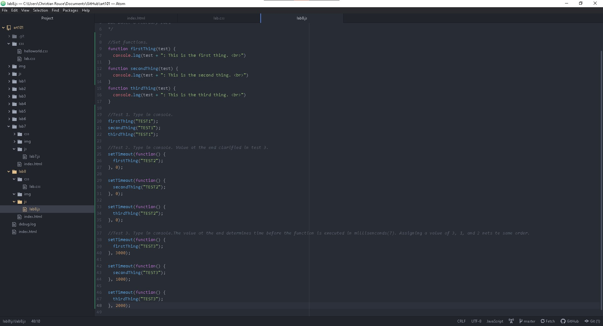
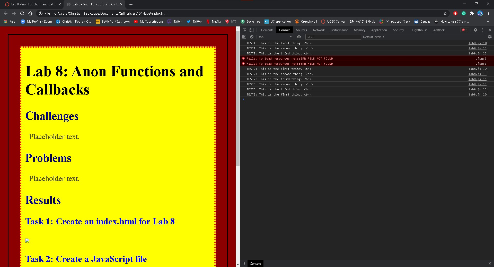

Lab 8: Anon Functions and Callbacks
Challenges
The challenge in this lab was creating timed functions with nested elements. A function within a function.
Problems
From previous experience, console.log would display the output of what was being called. When that did not happen, I mistakenly was given the impression that my code did not work. Essentially, my problem was not being aware that there was no problem with my work.
Results
Task 1: Create an index.html for Lab 8
Below is an image of the index.html file before these current additions were made.
Task 2: Create a JavaScript file
Below is the current up to date source of the JavaScript functions.
Task 3: Test, Debug, and Upload
Initially there were no present image files to display resulting in the error.
Additional Note:
By pressing ctrl+shift+I you are able to see the output of the JavaScript code in the console. Another way to access the console is to go to browser options > more tools > Developer Tools.